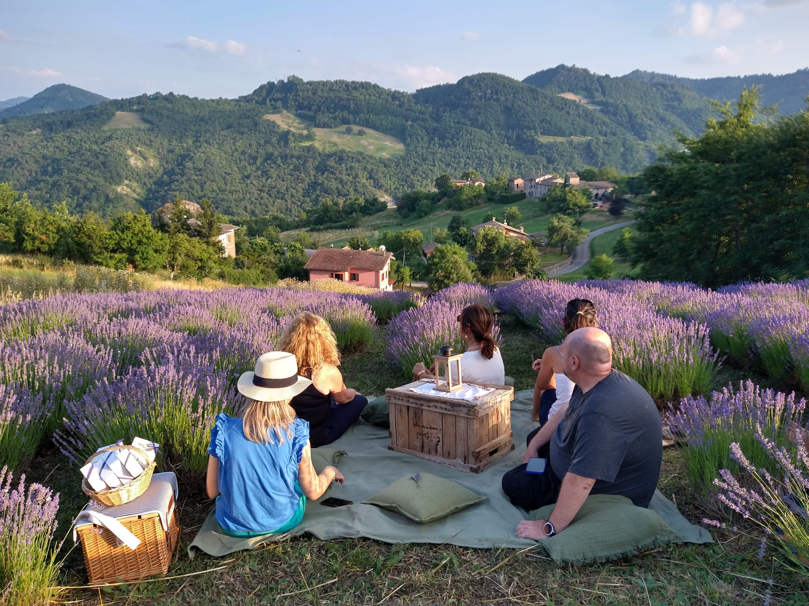
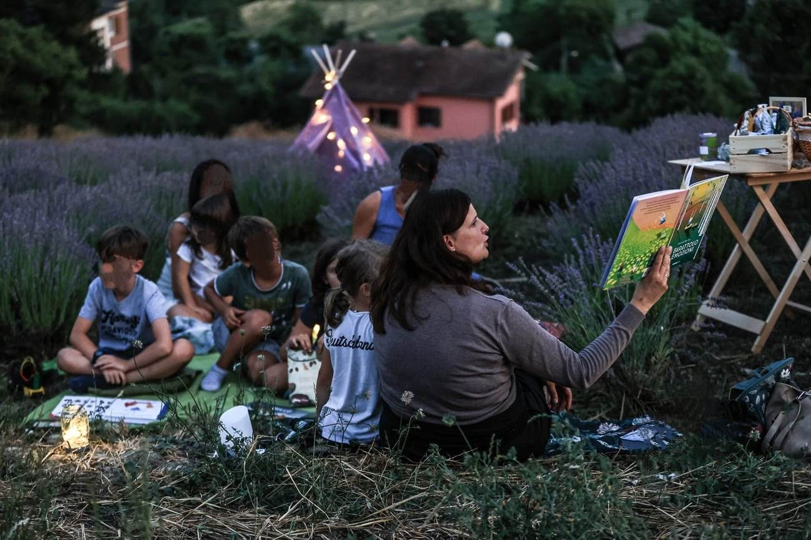

La Mia Produzione Artigianale
Il cuore di Tinifa è la coltivazione di essenze botaniche, con la lavanda (Lavandula angustifolia) protagonista indiscussa, accompagnata da calendula, melissa e menta.
Il mio impegno si traduce in un laboratorio interno all'azienda, dove la trasformazione avviene seguendo metodi tradizionali e artigianali:

Olii Essenziali
Estraggo personalmente gli olii con sapienza, preservando intatte le note aromatiche delle piante, ideali per profumare gli ambienti e creare atmosfere di serenità.

Artigianato Botanico
La mia linea di prodotti, come i cuscini aromatici, nasce per offrire un tocco di comfort naturale in ogni casa, trasformando momenti semplici in piacevoli pause di relax.
Un Luogo d’Incontro e Condivisione
Tinifa è un ambiente aperto e inclusivo, nato per accogliere chiunque desideri riscoprire la bellezza del tempo vissuto secondo il ritmo della natura. Attraverso le mie attività agricole e le iniziative sul campo, promuovo momenti di incontro in cui la natura diventa lo sfondo ideale per riscoprire il valore della semplicità e dell'accoglienza.


Perché Scegliere Tinifa?
Scegliere un prodotto Tinifa significa scegliere l'autenticità di una filiera corta e trasparente. Ogni creazione nasce dal lavoro che svolgo personalmente, garantendo che ogni passaggio — dalla semina alla confezione — rispetti i criteri di sostenibilità e artigianalità che definiscono il mio operato.
Tinifa è il risultato della mia passione quotidiana: un invito a fermarsi, a respirare e a riscoprire, nella natura, una fonte inesauribile di bellezza e benessere.